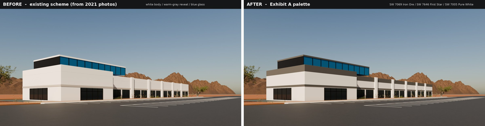
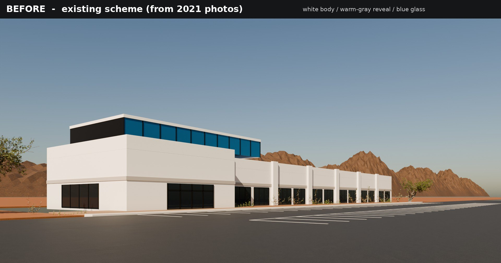
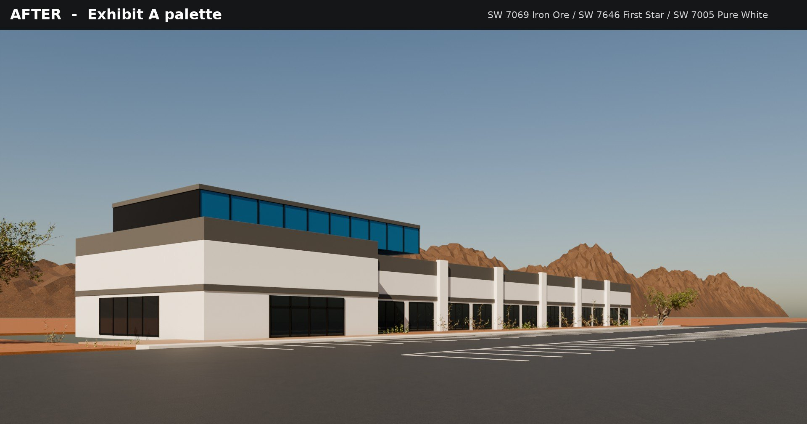

Sample · Exterior repaint rendering
Concept repaint study of a 1999-era Phoenix (Ahwatukee) flex/industrial building: the existing white scheme vs. a three-colour Sherwin-Williams scheme (charcoal parapet band, light-gray body, white pilasters). Same model, same camera, same sun – only the paint zones change, so the owner sees exactly what the repaint does.
Blender 4.2 · CyclesAgX colour managementPaint-zone materialsSW colour codesOpen-data demo, not client work



Screen hex values are Sherwin-Williams’ published approximations; final approval should be against physical chips on site.
| Step | What |
|---|---|
| Reference | Massing, reveal band, storefront rhythm and blue clerestory matched to the public marketing photos of the property (source below). Not a survey; dimensions are estimated. |
| Paint zones | Each repaintable surface is its own material (PAINT_Body, PAINT_UpperParapet, PAINT_RevealBand, PAINT_Pilaster_Accent, PAINT_ClerestoryFrame) with one colour node – a new scheme is a 5-value change, which keeps revision rounds fast. |
| Look | Stucco texture as subtle luminance variation, light base grime, physical (Nishita) sky at ~38° sun, AgX view transform, 160 spp + OpenImageDenoise. |
| Context | Desert landscaping, parking layout and a South Mountain backdrop (the site sits just south of South Mountain Park). |
Built in one evening from public photos: no palm trees, cars or signage yet, and the backdrop ridge is procedural. A paid job would start from the owner’s photos/elevations of every façade and add those entourage details.
Photo reference (not reproduced here): Westmount Realty Capital property page, westmountrc.com/property/mountain-vista-commerce-center. Vegetation and textures: Poly Haven (CC0). No AI image generation used.